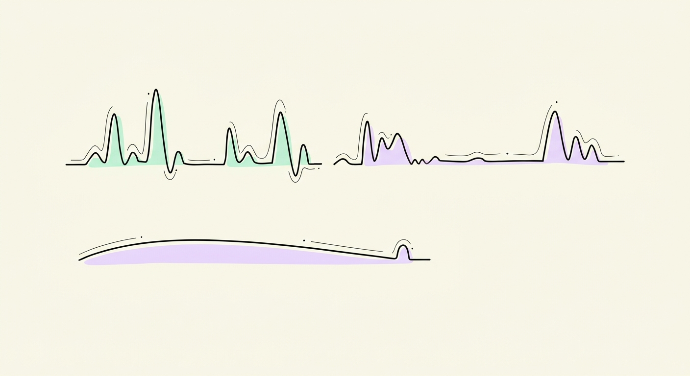
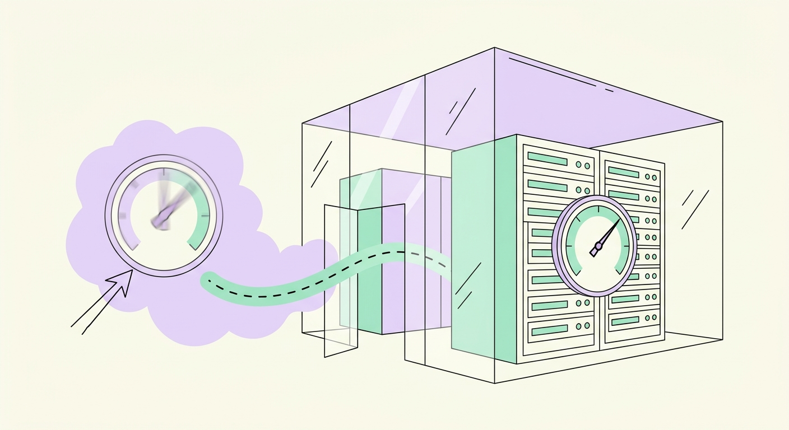
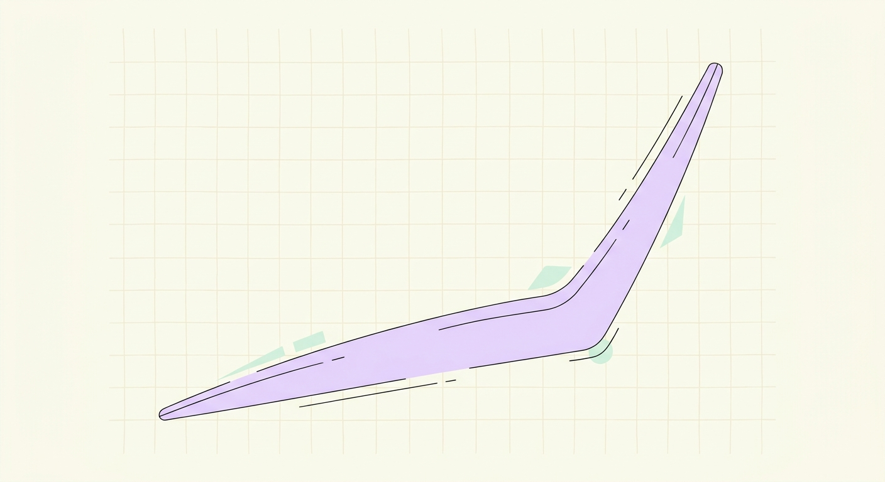
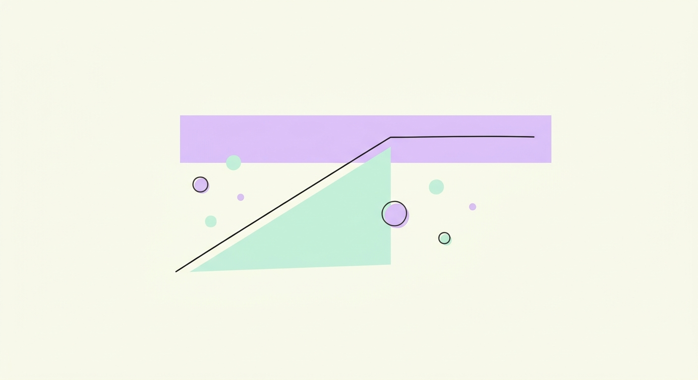

Twenty engineers optimized a production vLLM serving system for Qwen3-VL-4B. One number ranked them all, the Arena score, that rewards low latency, high goodput, and frugal hardware.
score = throughput · (1 − error) · users ÷ ( TTFT · ITL · GPUs )Top three by Arena score. The crown went to a B200 run; the silver and bronze are pure H100 craft.
Every submission, one formula. ✓ verified = computed from the engineer's own submitted result JSONs. self-reported = recomputed from the metrics in their report. Tap any bar for the full evaluation.
The metric isn't arbitrary. Every term maps to something a real serving system is judged on. Read it and the whole leaderboard makes sense.
Chunks per second that actually reached users. A fast server that drops requests earns nothing for them, so errors are not goodput.
How many simultaneous users were served. More users means more reward, so it pays to scale, but only if latency holds.
The 95th-percentile wait before the first token appears. It sits in the denominator, so responsiveness is rewarded and lag is punished.
The 95th-percentile gap between streamed tokens, which is how smooth the text feels. The single biggest lever in the whole arena.
Total GPUs deployed. Dividing by it means efficiency beats brute force, and four tuned GPUs can outscore eight.
For the eight engineers who submitted their benchmark result JSONs, we computed the score directly with the workshop's official score_infertutor.py, so no trust is required. For the rest, we recomputed the same formula from the best-config metrics in their report and labelled it self-reported. Two reports quoted the shared reference baseline as their text result, so they are ranked on their distinct mixed-track run, noted in place.
The leaderboard is the scoreboard; this is the playbook. Seven patterns separated the top runs, each a direct consequence of what the score rewards. Click any card for why it works, how to do it in production, and when it applies.

Turning on compiled mode (CUDA-graph capture) collapsed inter-token latency from ~20 ms to ~5–6 ms. Because ITL is in the denominator, that one switch was roughly a 24× score jump, the biggest single move anyone made.
The score divides by GPU count, so efficiency per GPU wins. Two-to-four tuned GPUs beat eight, a single warmed H100 beat two replicas, and one compiled GPU beat an 8-GPU eager cluster.

A slow off-cluster or home-uplink client bufferbloated TTFT ~3× and faked a 22 ms ITL. Co-locating the client inside the datacenter tripled the score on the identical server. The measurement, not the model, was the bug.
At a 40-token prefix, cache bookkeeping cost more than it saved, about a 28% TTFT penalty when left on. Caching is not free, so match it to your prompt length.

Past the knee, queuing makes TTFT explode (a Little's-Law demo went 1.3 s to 11.4 s). One engineer's roofline model even predicted the bottleneck order before any run. Push load to the elbow, not past it.
Cold-start contaminates p95: a warmup fix cut TTFT 6.2 s to 1.85 s, a 120 s ramp let replicas finish graph compilation before peak, and 90 s tests misled where 180 s told the truth.

The strongest reports placed every config in the memory-bound roofline and disqualified their own inflated runs. Knowing the hardware ceiling you are chasing, and trusting only clean measurements, is itself the engineering.